釣行日誌 ＮＺ編 「一期一会の旅：A Sentimental Journey」
老獪な大物鱒
11/29(THU)-2
中州から流木が突き出しており、その向こうに緩やかな淀みが見えた。
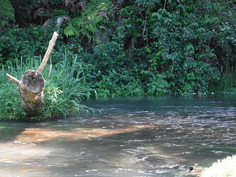
あそこは見込みがありそうだったので、ヤマメカラーのフローティングミノーに交換してから、対岸の草むらの下ギリギリにキャストしてから少し浮かしたまま淀みまで流し込み、トウィッチを入れた瞬間にヒットした。中州の向こう側を回して取り込んだ。
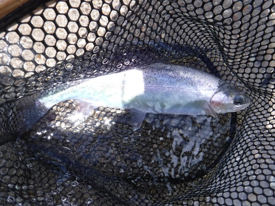
次々と同じようなサイズが当たるが、なかなか大物が出ない。50～60cm級がどこかに潜んでいることは確かなのだが。
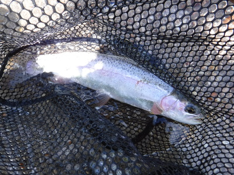
いかにも雰囲気のあるポイントに出くわし、狙いを定めてキャスト。ガクンというショックにすかさず合わせると、プツンとラインが切れた。
『アチャぁ！ これはイカン。』
いくら新品の６ポンドラインでも、どこかに傷があるとスパッと切れてしまう。反省。
別の右カーブのポイントでは良型が掛かり、何とかジャンプを堪えてからドラグ頼りで強引に上流へと寄せ、岸へとゴボウ抜きしようとしたら、鱒が身を震わせてバレてしまった。むむ、焦ってはイカンな、とまたまた反省。
正午を20分ほど回ったので、岸辺に腰を下ろしてランチとする。相変わらずワンパターンのサンドイッチとオレンジジュースだが、この風景の中では何を食べてもご馳走である。
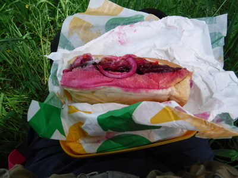
昼食後もアベレージサイズが続く。重い流れが崖にぶつかって左にガクンと曲がったカーブに深い淵が出来ていた。水深がかなりあったので、目立つ方が良いかなと、ピンクのファストシンキングミノーに替えて思い切り沈める。リールを巻き始めてミノーが描く扇形がこちら岸に近づいてくる。すると背後１メートルくらいの位置に大きな青い背中が見えた。
『うわ！あれはデカぃっ！ 喰えっ！そこだっ！』
少し緩めてアクションを入れてみたが、かなり長い距離を追って来たあげく、老練な大物鱒はどうやら派手なピンク色を嫌ったらしく、こちら岸の足下で反転して元の深みへと姿を消してしまった。ヒットが続いていたヤマメカラーをライン切れでなくしたのは痛かった。ミノーを取り替えてしばらく粘ってみたが、さっきの大物鱒は２度と現れなかった。
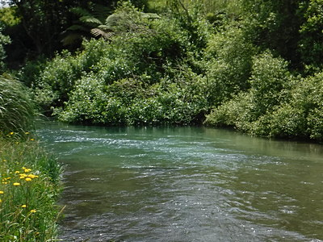
浅場が続くポイントでは、水際に沿って設けられたフェンスを、地面に横たわって体を回しながらくぐって抜けてから水中に立ち込み、冷たい流れを我慢しながら釣り下る。時折深みを渡る時には腰のあたりまで水に浸かるので急所が冷たくて死にそうな思いをした。真夏になれば快適だろうが。
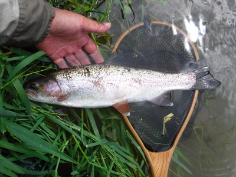
この川としては、まずまずのサイズが釣れた。しかしどの魚も美しくて思わず見とれてしまう。
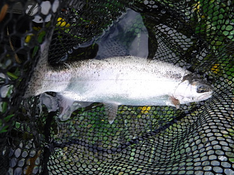
すべてのレインボーたちが野生の本能を遺憾なく発揮して、フッキングと同時に派手にジャンプする。ググッと来てロッドを立てようと思う瞬間にはもう魚体は空中に飛び出しているのである。鈎の刺さりは悪くないと思うが、何とかあのフック外しに対処する方法はないものだろうか？まぁ、根性を入れてドライかニンフで釣り上がればかなり解消されるのだろうが。８年前は黒いストリーマーでの釣り下りを試したのだが、あの時はそれほどバラシは無かったからなぁ....。
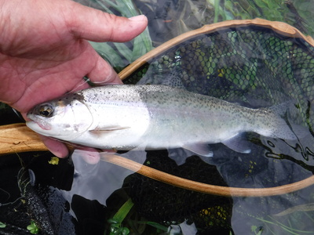
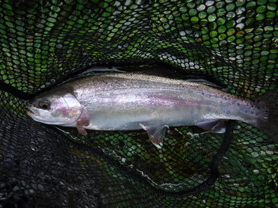
午後４時過ぎに釣った１尾を本日の打ち止めとして、牧草地に上がった。ずいぶんと釣り下った気がしたが、遠くに国道が見えるので、ほんのわずかの区間しか釣っていないことがわかった。
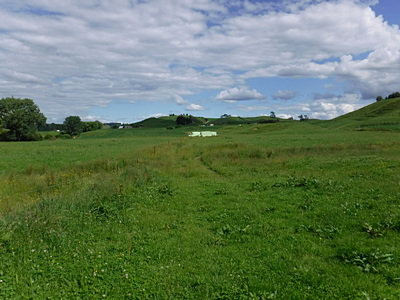
しばらくフェンス沿いに歩き農道に出てから勝手知ったるミルキングシェッドの脇を抜けて国道にたどり着き、今朝の奥さん宅までトボトボと歩いた。タイツと短パンは化繊なので水切れは良いが、下着のパンツは綿100%なので水をいつまでも含んで少々気持ち悪かった。今度はパンツも化繊のものにしよう。
農家の庭先で服を着替えるのはさすがにはばかられたので、またガソリンスタンドのトイレで着替えてからハミルトンを目指す。今日は明るいうちに帰途についたので、迷うことなく夕方7時には大林さん宅までたどり着き、焼き肉、アボガドのサラダ、昨夜バーバラさんが作って来てくれたコールスロー、白いご飯という夕食をいただく。
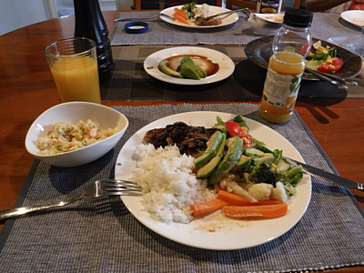
シャワーを浴び、薬を飲んでゆっくりと眠った。心地よい川歩きの疲れだった。
釣行日誌ＮＺ編 目次へ
サイトマップ
ホームへ
お問い合わせ